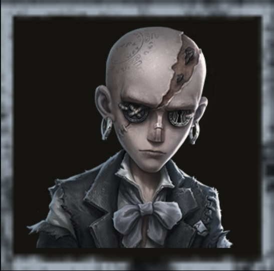

脱出マスターの評価
ハンターは脱出マスターを見つけるのは不可能！？
外在特質と特徴
特質1:目くらまし
・脱出マスターはスモークジェネレーターを携帯し、ジェネレーターを投げると直径16.9メートルのリング状スモークエリアが生成される。15秒持続。・サバイバーがスモークエリアの付近にいる間はハンターに位置が表示されず、ハンターの一部の創造物や飛行アイテムもスモークエリアを通過できない。位置を指定して発動するタイプのスキルは、スモークエリアを跨いで発動位置を選択できない。
・サバイバーがスモークエリアから離れた7秒後、ハンターにその位置が表示される。
ハンターが脱出マスターと同時にスモークエリアの付近にいる時、脱出マスターにその位置が表示される。また、脱出マスターがリング状のスモーク内を移動する際は足跡が残らない。
特質2:脱出術
・ロケットチェアの付近にはスモークジェネレーターが設置されている。サバイバーがロケットチェアに拘束された時、脱出マスターは5秒以内に脱出術を使用し、サバイバーを38メートル以内の別のロケットチェアに移動させることができる。・移動中はロケットチェアの発射進度が一時停止し、サバイバーは移動後の6秒間ロケットチェアを操作できなくなる。
・地下室にいるサバイバーは移動できない。
特質3:二重フェイク
・初めて通常攻撃1回分を超えるダメージを受けた時、脱出マスターのスモークはダメージから自身を守り、前方の位置に自身を出現させる。特質4:先読み
・脱出マスターは板・窓の操作速度が10%アップする。・いずれかのサバイバーが風船に拘束されている時、全てのサバイバーを持続的に視認できる。
・解読速度が15%低下する。
特徴
ハンターからスモークを使用することで15秒間ほぼ確実なチェイス時間を稼げる。二重フェイクで1ダメージを防げるといった化物性能をしている。
ロケットチェアを変更できる唯一無二のサバイバー
基本的な立ち回り方
1. 追われた時
スモークジェネレーターをすぐに使い、視界を遮ってハンターの追跡を妨害しよう。
スモークの中では足跡が残らず、位置も表示されないため、一気に距離を取るチャンス。
ハンターがスモーク内に入ってきたら、脱出マスター側から位置が可視化されるので、先読みチェイスが可能。
板・窓の操作速度が10%上昇している点も活かして、強ポジで粘ろう。
ダメージを受けた際は、自動で発動する「二重フェイク」で前方へ回避できるので、フェイントやポジション切り替えに活かすこと。
2. 追われない時
解読しよう！
解読速度は15%低下しているため、補佐・牽制に回るのが理想的。
味方がロケットチェアに拘束された場合は、脱出術で即座に移動させる判断も必要になる時がある。
ハンターの心音が聞こえたら、スモークジェネレーターを設置して位置隠し・追跡妨害の準備を。

みんなのコメント